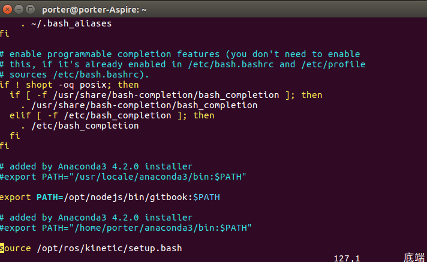
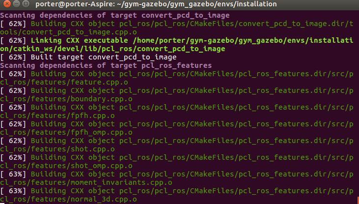

摘要
本文主要记录gym_gazebo安装的过程，想想每次安装都要一堆的百度，过程很痛苦，所以直接记录下我成功安装的过程，方便后面安装的参考。
具体内容如下：
解决ubuntu 中安装 gym_gazabe 遇到的各种水土不服
Basic requirements:
- ROS Kinetic (/rosversion: 1.12.7)
- Gazebo 8.1.1
- Python 3.5.2
- OpenCV3, installed from sources for Python 3 (git clone https://github.com/Itseez/opencv.git)
- OpenAI gym
这部分的安装请自行百度, 但是这部分的内容也要安装上，不然安装gym_gazebo会出错的。
ROS Kinetic dependencies
sudo pip3 install rospkg catkin_pkg
sudo apt-get install python3-pyqt4
sudo apt-get install \
cmake gcc g++ qt4-qmake libqt4-dev \
libusb-dev libftdi-dev \
python3-defusedxml python3-vcstool \
libbluetooth-dev libspnav-dev \
pyqt4-dev-tools libcwiid-dev \
ros-kinetic-octomap-msgs \
ros-kinetic-joy \
ros-kinetic-geodesy \
ros-kinetic-octomap-ros \
ros-kinetic-control-toolbox \
ros-kinetic-pluginlib \
ros-kinetic-trajectory-msgs \
ros-kinetic-control-msgs \
ros-kinetic-std-srvs \
ros-kinetic-nodelet \
ros-kinetic-urdf \
ros-kinetic-rviz \
ros-kinetic-kdl-conversions \
ros-kinetic-eigen-conversions \
ros-kinetic-tf2-sensor-msgs \
ros-kinetic-pcl-ros \
ros-kinetic-navigation \
ros-kinetic-ar-track-alvar-msgs
Install Sophus
cd
git clone https://github.com/stonier/sophus -b release/0.9.1-kinetic
cd sophus
mkdir build
cd build
cmake ..
make
sudo make install
echo "## Sophus installed ##\n"
Gazebo gym
cd
git clone https://github.com/erlerobot/gym-gazebo
cd gym-gazebo
sudo pip3 install -e .
Dependencies and libraries
sudo pip3 install h5py
sudo apt-get install python3-skimage
# install Theano
cd ~/
git clone git://github.com/Theano/Theano.git
cd Theano/
sudo python3 setup.py develop
#install Keras
sudo pip3 install keras
Agent dependencies
这部分的安装可以参考我的github 仓库(gazebo.repos 已经修改过,并且在ubuntu16上正确编译安装通过，可以直接clone下来安装,我只修改了gazebo.repos,设置/usr/local/python3.5环境):
这部分的安装需要注意请尽量用"/usr/local/bin/python3.5"如果用anaconda的python环境下安装，会出现Cmake 报错,如果你有解决的办法可以忽略提示切换python 环境，只需要执行如下命令：
vim ~/.bashrc
# 修改弹出的文本，将export anaconda这行注释掉，如下所示
# added by Anaconda3 4.2.0 installer
#export PATH="/home/porter/anaconda3/bin:$PATH"
效果如下：

安装前需要配置下Agent 的gazebo.repos
cd ~/gym-gazebo/gym_gazebo/envs/installation/ cp ./gazebo.repos ./gazebo.repos.bak gedit ~/gym-gazebo/gym_gazebo/envs/installation/gazebo.repos
- gazebo.repos 内容如下 主要修改一些github 仓库对应版本release的分支问题, 解决安装时的错误， 修改后的内容如下：
repositories:
# ardupilot_sitl_gazebo_plugin:
# type: git
# url: https://github.com/erlerobot/ardupilot_sitl_gazebo_plugin
#
# version: master
ar_track_alvar:
type: git
url: https://github.com/ros-perception/ar_track_alvar.git
version: kinetic-devel
mav_comm:
type: git
url: https://github.com/ethz-asl/mav_comm.git
version: master
# ar_track_alvar:
# type: git
# url: https://github.com/sniekum/ar_track_alvar
# version: indigo-devel
# ar_track_alvar_msgs:
# type: git
# url: https://github.com/sniekum/ar_track_alvar_msgs
# version: indigo-devel
catkin_simple:
type: git
url: https://github.com/catkin/catkin_simple.git
version: master
control_toolbox:
type: git
url: https://github.com/ros-controls/control_toolbox.git
version: indigo-devel
# drcsim:
# type: hg
# url: https://bitbucket.org/osrf/drcsim
# version: default
ecl_core:
type: git
url: https://github.com/stonier/ecl_core
version: release/0.61-indigo-kinetic
ecl_lite:
type: git
url: https://github.com/stonier/ecl_lite
version: release/0.61-indigo-kinetic
ecl_navigation:
type: git
url: https://github.com/stonier/ecl_navigation
version: devel
ecl_tools:
type: git
url: https://github.com/stonier/ecl_tools
version: release/0.61-indigo-kinetic
driver_base:
type: git
url: https://github.com/ros-drivers/driver_common.git
version: indigo-devel
gazebo_ros_pkgs:
type: git
url: https://github.com/ros-simulation/gazebo_ros_pkgs
version: indigo-devel
# glog_catkin:
# type: git
# url: https://github.com/ethz-asl/glog_catkin.git
# version: master
hector_gazebo:
type: git
url: https://github.com/tu-darmstadt-ros-pkg/hector_gazebo/
version: indigo-devel
image_common:
type: git
url: https://github.com/ros-perception/image_common.git
version: hydro-devel
joystick_drivers:
type: git
url: https://github.com/ros-drivers/joystick_drivers.git
version: master
kobuki:
type: git
url: https://github.com/yujinrobot/kobuki
version: indigo
kobuki_core:
type: git
url: https://github.com/yujinrobot/kobuki_core
version: indigo
kobuki_desktop:
type: git
url: https://github.com/erlerobot/kobuki_desktop
version: indigo
kobuki_msgs:
type: git
url: https://github.com/yujinrobot/kobuki_msgs
version: indigo
# mavros:
# type: git
# url: https://github.com/erlerobot/mavros.git
# version: gazebo_udp
# mav_comm:
# type: git
# url: https://github.com/PX4/mav_comm.git
# version: master
navigation:
type: git
url: https://github.com/ros-planning/navigation
version: indigo-devel
# osrf-common:
# type: hg
# url: https://bitbucket.org/osrf/osrf-common
# version: default
pcl_ros:
type: git
url: https://github.com/ros-perception/perception_pcl.git
version: indigo-devel
# python_qt_binding:
# type: git
# url: https://github.com/ros-visualization/python_qt_binding
# version: kinetic-devel
# qt_gui_core:
# type: git
# url: https://github.com/ros-visualization/qt_gui_core
# version: groovy-devel
realtime_tools:
type: git
url: https://github.com/ros-controls/realtime_tools
version: indigo-devel
ros_control:
type: git
url: https://github.com/ros-controls/ros_control
version: indigo-devel
roslint:
type: git
url: https://github.com/ros/roslint
version: master
# rqt:
# type: git
# url: https://github.com/ros-visualization/rqt
# version: groovy-devel
# rqt_common_plugins:
# type: git
# url: https://github.com/ros-visualization/rqt_common_plugins
# version: master
# rqt_robot_plugins:
# type: git
# url: https://github.com/ros-visualization/rqt_robot_plugins
# version: master
turtlebot:
type: git
url: https://github.com/turtlebot/turtlebot
version: indigo
turtlebot_create:
type: git
url: https://github.com/turtlebot/turtlebot_create
version: indigo
turtlebot_simulator:
type: git
url: https://github.com/turtlebot/turtlebot_simulator
version: indigo
xacro:
type: git
url: https://github.com/ros/xacro
version: indigo-devel
yocs_msgs:
type: git
url: https://github.com/yujinrobot/yocs_msgs
version: release/0.6-kinetic
yujin_ocs:
type: git
url: https://github.com/yujinrobot/yujin_ocs
version: kinetic
具体的修改地方建议，通过code compare 工具查看，这里推荐一个好用而代码比较工具：Meld Diff 比较好用。
- 接下来执行如下Agent dependences
cd gym_gazebo/envs/installation
bash setup_kinetic.bash

Run the environment with a sample agent
cd gym_gazebo/examples/scripts_turtlebot
python circuit2_turtlebot_lidar_qlearn.py